新的宇宙运律运行
36小时制 · 18生肖 · 白阳法盘
白阳盘 · 十八生肖
八卦升级十二卦 · 属相升级十八个 · 九宫十二卦
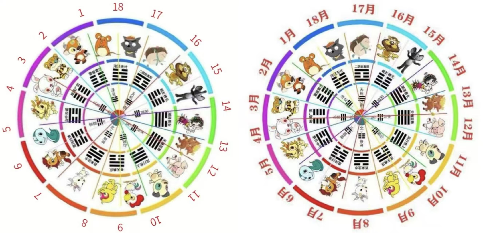
进入新的宇宙运律运行，
每天是36小时（每小时90分，每分90秒），
一年有5个春天，一年三季，一季6个月，一个月是45天。
一年是18月，810天左右。有18个生肖：鼠子 · 丑牛 · 虎寅 · 免卯 · 龙辰 · 蛇巳 · 马午 · 羊未 · 猴申 · 鸡酉 · 戌狗 · 猪亥 · 凤凰 · 大象 · 狮子 · 刺猬 · 狼 · 麒麟。
人均寿命 300 ~ 800 年。
猫有九条命，人有九轮回，三魂七魄全部归位。
原人办原事，元灵归原位，原物归原主！
地球从三维扬升进入五维，电子计算器从2进制010开始，到量子宏计算器012开始，到光子信号计算器015。
人类彻底进入光的海洋，就是传说中的天堂。
量子进制 · 从 010 到 015
信息进制的跃迁
| 时代 | 计算载体 | 标识 | 进制 | 单次运算 | 香农熵 H | 每符号 bit |
|---|---|---|---|---|---|---|
| 电子时代 | 硅基二进制芯片 | 010 | 二进制（0~1，2 态） | 2n | 1.00 | 1 bit |
| 过渡期 | 相位调制硅光芯片 | —— | 五进制（0~4，5 态） | 5n | 2.32 | 2.32 bit |
| 量子过渡 | 量子宏计算器 | 012 | 三进制（0~2，3 态） | 3n | 1.58 | 1.58 bit |
| 光子时代 | 光子信号计算器 | 015 | 十六进制（0~15，16 态） | 24n | 4.00 | 4 bit |
香农信息熵公式：H = −Σ p(i) log p(i)。010（二进制）H=1 → 012（三进制）H≈1.58 → 015（十六进制）H=4.00，恰好是二进制的 4 倍整数。螺旋上升回到 2 的幂，但站在更高的维度。
为什么 015 = 十六进制（0~15）？
不是线性增长，是指数跳变：2 态 → 3 态 → 16 态。这正是"光子信号"相对于"电子/量子宏"应有的代际差距。
🔢 命名逻辑
「015」= 0 到 15 的闭区间，共 16 个值。如同「010」= 0 到 1（2 个值），「012」= 0 到 2（3 个值）。人类用范围表达进制。
📡 16-QAM 光子通信
全球海底光缆的 400G/800G 相干光传输即 16-QAM：4 相位 × 4 幅度 = 16 星座点。光子信号天然匹配 16 态编码，已大规模商用。
⚛️ 4-qubit 量子对应
4 个纠缠量子比特产生 16 个叠加态，天然对应 0~15。量子光子融合时，16 态是信息承载的自然单位。
🎯 螺旋回归
010 = 2¹ 态，015 = 2⁴ 态。从 2 的幂出发，历经三进制/五进制中间站，最终回到 2 的更高次幂——螺旋上升，而非简单线性。
相位调制 · 五状态编码（过渡阶段）
利用相位差（0° 与 180°）+ 空状态（No Signal），构建五进制信号体系，为终极十六进制奠基：
1-bit 编码单元 + 相位差产生的图形与麦田圈提示的外星天线技术高度类似，提示人类文明传输技术正在经历根本性升级。
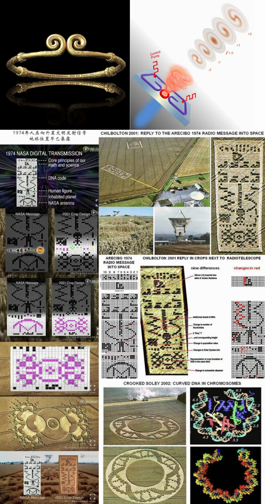
1-bit 编码 + 相位差图形 → 外星天线技术 · 中华文化大纲同源📊 数学验证：素数生成算法对比基准 → · Croft 螺旋筛 1.9× 快于埃拉托色尼 · PKS 子页完整算法详情 →
几何体顶点 · 量子探测器阵列
不同正多面体的顶点在球面上分布，可作为量子检测器（detectors），产生对应的分形结构：
特斯拉早期用完美球面传递信号。球体可包容所有几何体结构。事先放置检测器，量子在球面的分布自动以分形展开方式汇聚至检测器附近。
你怎么看待世界，世界就怎么呈现给你。不要着相，保持中道观空。
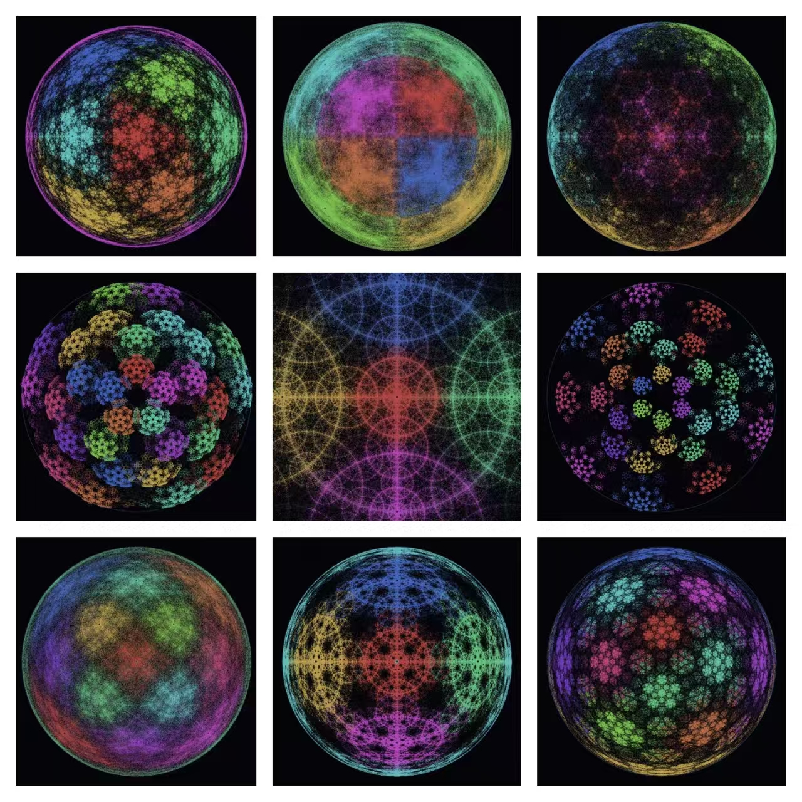
混沌效应 · 从无序到有序
混沌可促进局部能量聚集，引发自组织，从无序向有序过渡。能量聚集在相空间的奇异吸引子附近，引发相变化——这与分形维数和拓扑结构直接相关。
特斯拉转世 Putney 借助 A. Jadczyk 的论文成果间接说明：观测行为本身引发量子态的坍塌与重组。信息传输的本质是消除不确定性（香农）。
硅光芯片实现路线
参考：Interfacing Photonics with Artificial Intelligence · 香农信息论 · Tesla-Putney-Jadczyk 量子观测理论
人类出路 · 科技次第花开
教育变革 · 保护天赋 ▾
国学院与高维老师合作，改变现有教育方式。14岁以下不学知识，练童子功恢复功能；14岁以上学习易经与七大工程师启蒙。运用慈海九宫格让孩子发挥各自天赋使命。
宗教的历史变迁
摘自佛陀罗尼《金刚经》第6页：
宗教进入社会变成哲学主观唯心主义（贝克莱），
哲学主观唯心主义变成客观唯心主义（黑格尔），
哲学客观唯心主义变成辩证唯心主义（黑格尔），
哲学辩证唯心主义变成机械唯物主义（费尔巴哈），
哲学机械唯物主义变成辩证唯物主义（马克思），
哲学辩证唯物主义变成现代科学主义（爱因斯坦）。
而宗教是把人类颠倒过来，从梦想走向真理。
从三位一体到二位一体的思维退化
物质性与精气神是三位一体思维方式下的哲学概念，物质与精神是二位一体思维方式下的哲学概念。
现代哲学家们把「物质性」变成「物质」，把「精气神」变成「精神」，然后将二者对立——讨论到底是物质决定精神，还是精神决定物质。
从现象的层面观察，得出物质决定精神；从根源的层面观察，得出精神决定物质——这是人类历史认识的一个灾难性漩涡。
实际上，物质性和精气神是一个东西，没有决定与被决定的关系。马克思指出：事物的性质决定事物的存在——即性质决定物质（而非物质决定精神）。俗话说「神清气爽」：神性决定气质，气质决定物精。性质决定物质，与物质决定精神，是矛盾的。
早在列宁时代就出现了科学与玄学的论战，结果得出物质消亡论。为此列宁提出「客观实在」这个哲学上的物质概念——今天科学又证实了物质的虚无性。
「客观实在」超出了物质和意识的概念范畴：黑格尔解释为绝对精神，爱因斯坦理解为不可抗拒。那么客观实在的背后又是什么？宗教讲上帝，佛学讲：万法唯心造。
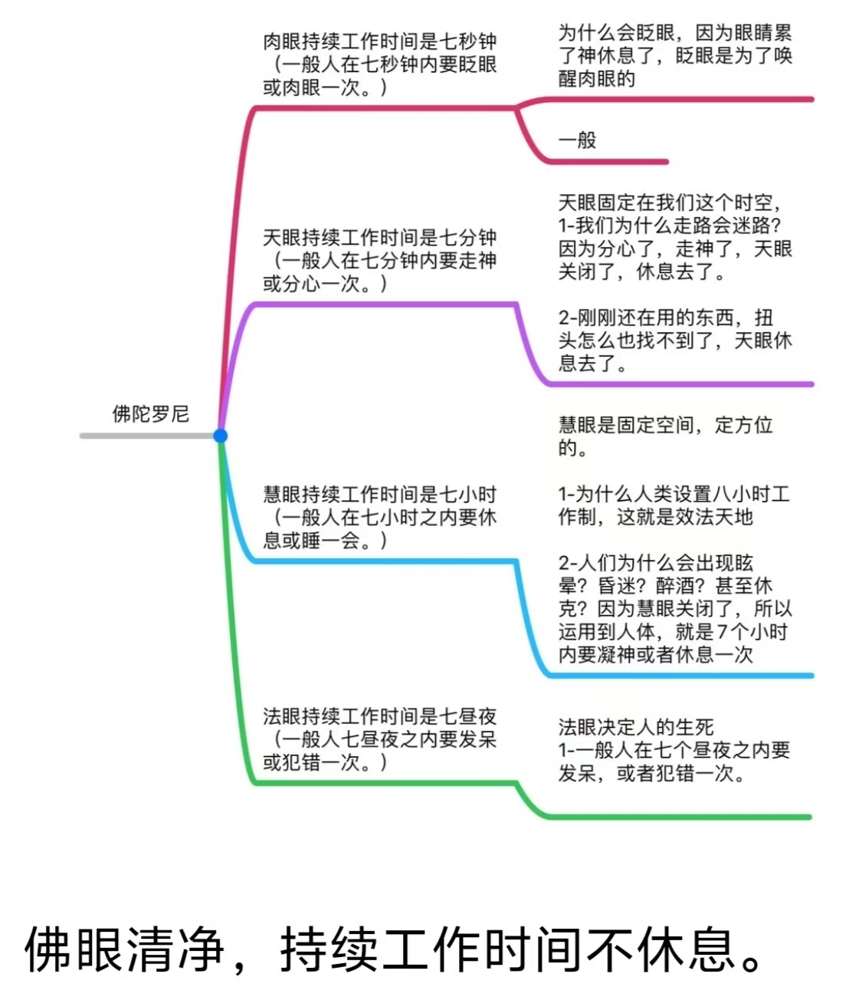
《金刚经》五眼：肉眼·天眼·慧眼·法眼·佛眼 — 四大学问的修行次第对应四大学问
四层递进：从科学（实验观察现象）→ 玄学（归纳本质规律）→ 禅学（内证根源实相）→ 绝学（通达本源空性）。14 岁前重在保护先天直觉（禅/绝），14 岁后启蒙后天思维（科/玄），两条线并进不偏废。
四大思维
教育次第：形式思维（逻辑与结构，小学筑基）→ 辩证思维（对立统一，中学启蒙）→ 生化思维（系统演化，大学专攻）→ 自由思维（超越框架，毕生修行）。最终目标是养成不被任何体系绑架的独立思考力。
培养五种能力
身→心→性→法四层次第的能力外显：体力（肉身形体健康，百日筑基）→ 智力（逻辑学习与知识整合）→ 法力（能量运用，如 GDV 辉光可测）→ 色力（物质显化，以太打印雏形）→ 灵力（自性连接，阿卡西下载）。五力圆融方为完人。
培养四种人才
慈海九宫格定位天赋后的四种成长路径：知识型（存储与传承，对应图书馆/数据库角色）→ 智力型（分析与创新，对应科研/策略角色）→ 功能型（特异能力实践，对应疗愈/以太技术角色）→ 自由型（超越一切定位，对应觉者/导师角色）。教育不是模具，是让每一颗种子长成它本来的样子。
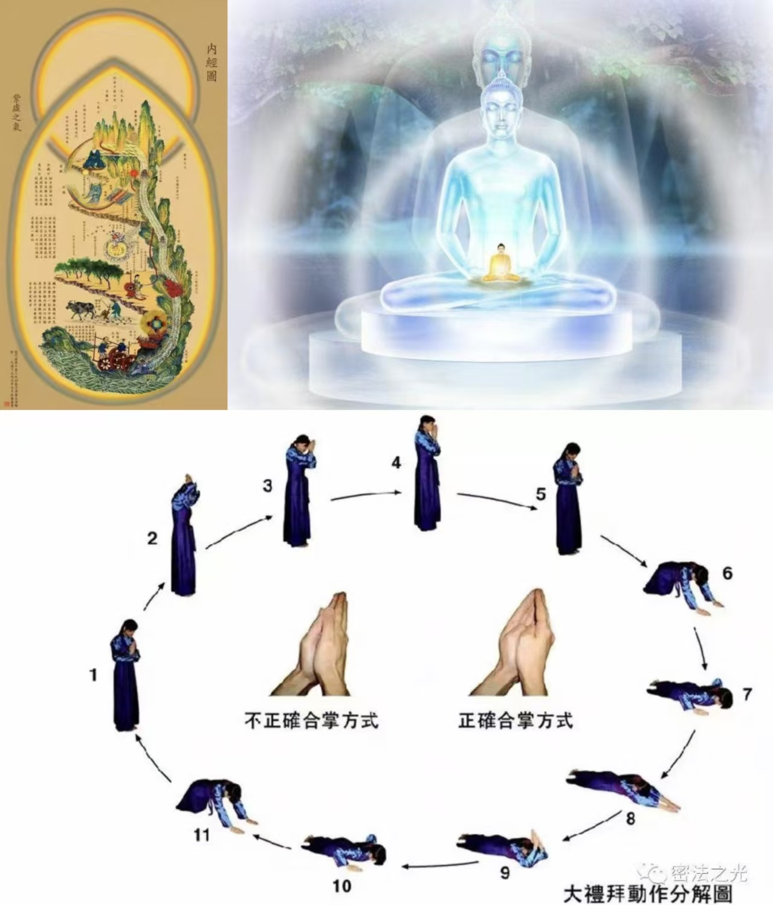
打通关节通关 · 内景图小周天运转（修仙次第实修图谱）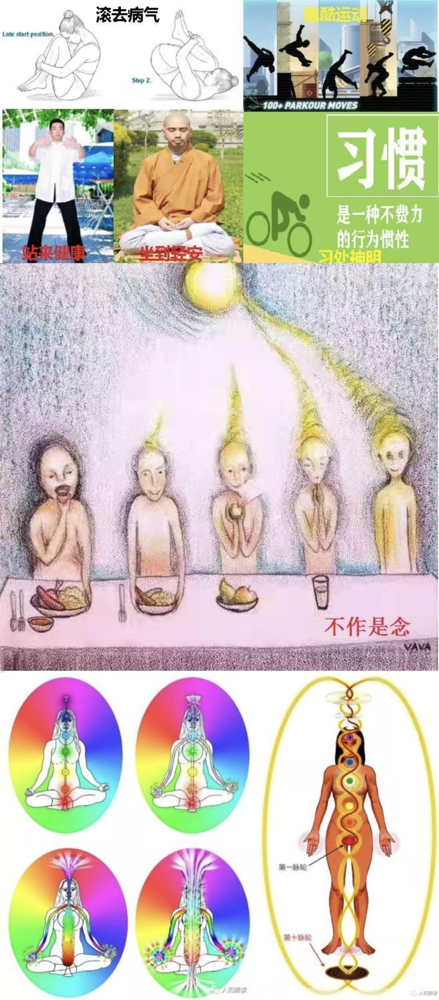
中脉贯通 · 性位七轮校准核心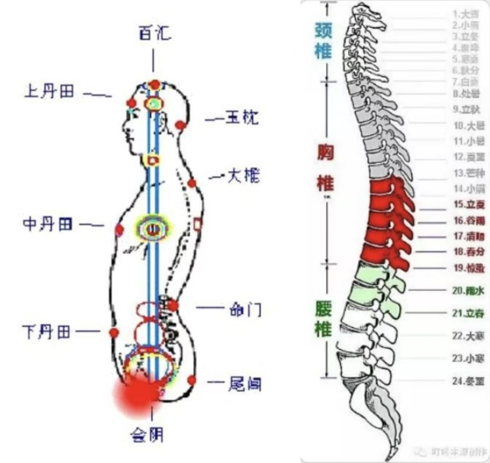
丹田与脊柱 · 身位能量解剖基础H₄O 能量进阶 · 松果体激活 ▾
借助432之谜的金丹技术：四面体六元环材料（H₄O 水 + Si₄O 水晶）+ 超声波环场布阵，控制压缩分子到特定几何结构，激活松果体，打通高维信息通道。
此阶段完成后，人人可与自己的元神（高我）沟通，下载宇宙阿卡西记录。
能量进阶链（从水食到气食）
▎Schauberger 蛋形 H₄O 制水装置
🥚 装置结构
蛋形容器：模仿自然涡旋形态，水在其中形成蛋形环流。核心组件为金银合金波纹盘，关键特征——表面为六边形晶格结构（Hexagonal Lattice），与 H₄O 六元环分子结构共振匹配。
⚡ 工作机制
水在金银合金波纹盘之间以4 倍音速（~1360 m/s）流射而出，在蛋形装置内形成蛋形环流涡旋。极速剪切力 + 六边形晶格表面催化 → 普通 H₂O 分子重构为六元环 H₄O 结构。
★ H₄O 是本阶段核心：既是松果体激活的介质（六元环分子水+超声波），又是能量进阶链的关键节点（从液态水跨入"丹/神水"）。推广 Schauberger 六元环 H₄O 分子水，全国明星大会领头推行全面养生健身时代。科学种田发展生机农业，AI 落地替代无意义辛劳。
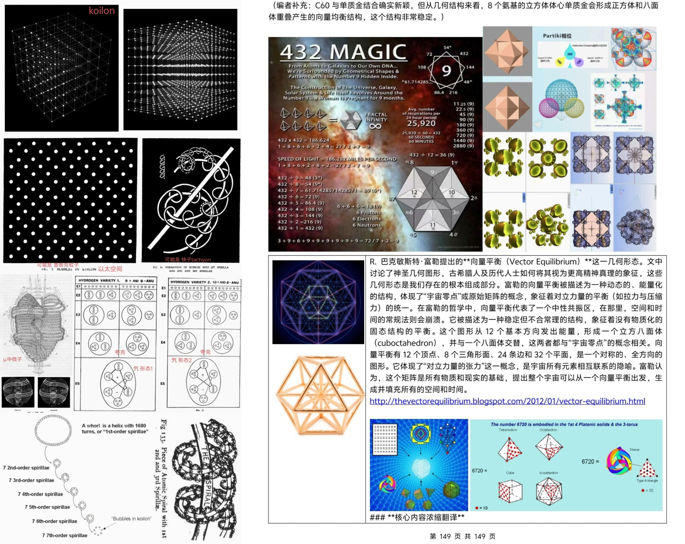
H₄O 能量进阶 · 松果体激活（图一）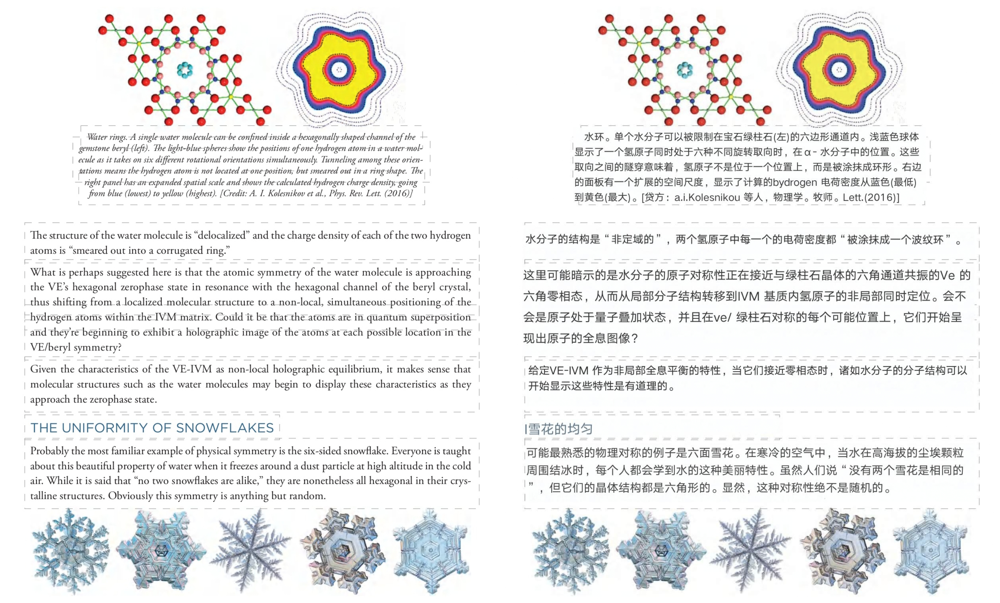
H₄O 能量进阶 · 松果体激活（图二）H₄O 技术一箭双雕：对内激活松果体链接高维，对外推动全民能量进阶从水食过渡到气食。
GDV 人体辉光检测 · 五进制 → 015 十六进制硅光芯片脑波直读 ▾
GDV (Gas Discharge Visualization) 气体放电可视化仪器——通过采集十个手指尖端在高压高频电场下产生的气体放电辉光（捕获 255nm 波长以下的紫外-可见频谱），经 CCD 数字处理后重建人体能量场图像。该技术由俄罗斯 Konstantin Korotkov 教授基于 Kirlian 摄影术发展而来，Bio-Well 是其商业化产品。
GDV 可检测的层次（身→心→性→法）：
- 身位：12 经络能量偏离与平衡%、40+ 器官系统能量、26 节脊柱映射、十指扇区对应
- 心位：五行生克·三因（隆/赤巴/培根）·脏腑辨证·九型人格倾向
- 性位：三脉七轮（中脉/左脉/右脉 + 7 个神经系统中心）能量·校准·不对称
- 法位：CSS 五维评分（心神宁静度/阳气值/恢复韧性度/内在饱满度/能量和谐度）+ 综合状态评分
从 EEG 非侵入式头皮电极识别脑波，过渡到五进制硅光芯片（012 量子宏中间态），最终实现015 十六进制硅光芯片直接读取脑波——激活松果体，光体情绪技术逐渐应用。技术路径：电子计算器 (010/二进制) → 量子宏 (012) → 光子信号 (015/十六进制)。
结合香农信息论：二进制 log₂(2)=1 bit/符号，五进制 log₂(5)≈2.32 bit/符号（2.32 倍容量），十六进制 log₂(16)=4 bit/符号（4 倍容量，信息极限）。最终 015 光子计算机兼容 4-qubit 量子光子融合与 16-QAM 相干光传输。
通过正确修仙路径，人类寿命将无限延长。修仙非玄学——是身→心→性→法四层次第的次第清晰修证体系：身位食药调养与动功导引 → 心位情志管理与脏腑辨证 → 性位中脉贯通与七轮校准 → 法位自性源点觉醒与能量信息合一。详见 340岁地仙奇遇记 与 GDV 铁律论文档。
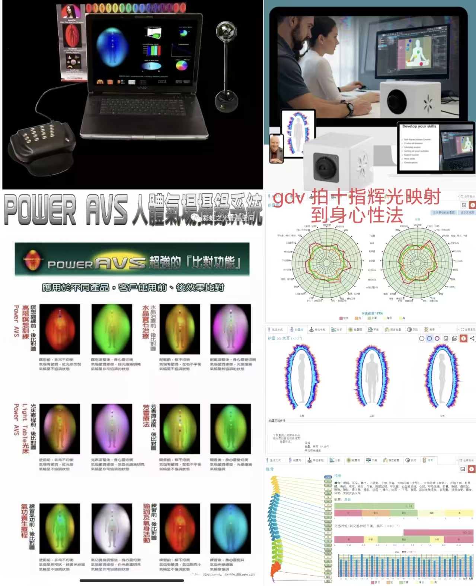
AVS 与 GDV 人体辉光检测仪器实物飞碟科技 · 超导超磁超流 ▾
加速推广飞碟相关产业科技，超导超磁超流技术军转民用。
🦶 近距离
磁悬浮浮飞鞋与平台，短距离旅行犹如地上溜冰
🛸 中远距离
Schauberger + Alfred Workman 时空引力统一场模型；制造 SEG 运用幻方编码复合波给滚筒充磁，以太去极化汲取时空能量
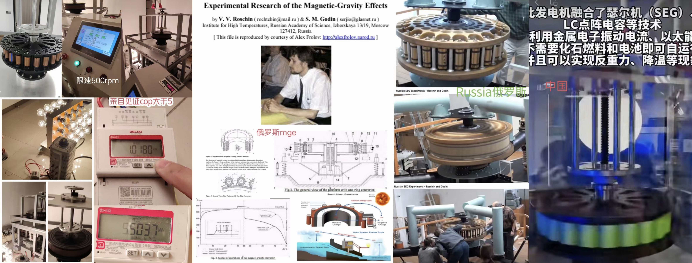
飞碟科技 · 超导超磁超流（图一）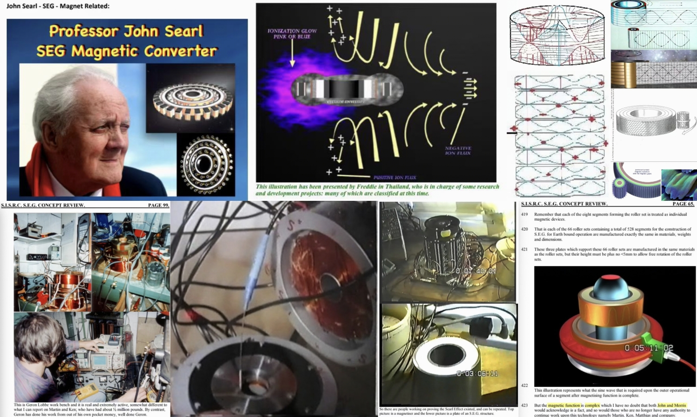
飞碟科技 · 超导超磁超流（图二）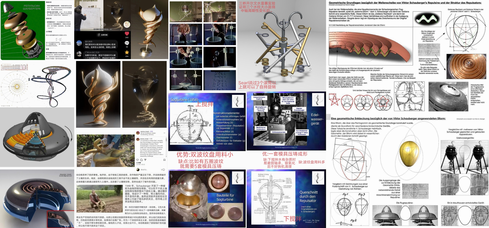
飞碟科技 · 超导超磁超流（图三）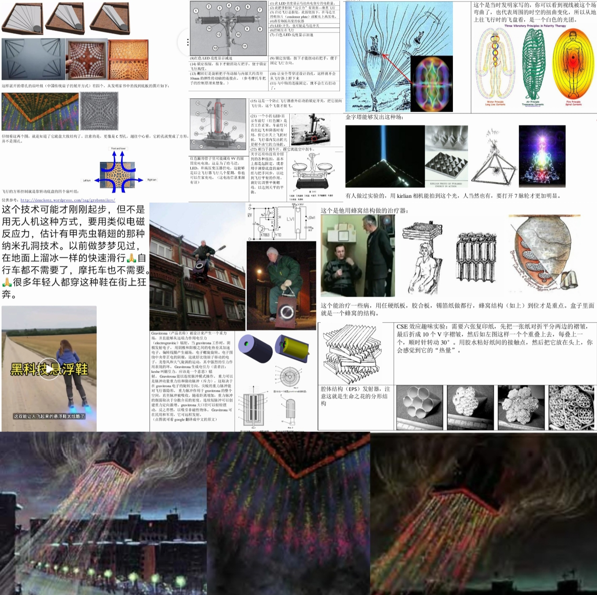
飞碟科技 · 超导超磁超流（图四）功德分系统 · 淘汰金融资本 ▾
以道、德、仁、义、礼、智、信七个字作为功德分公式的内涵因子，建立公民功德分系统。科技上对应人体七脉轮能量水平检测（如 GDV 检测仪）。
乌克兰科学家团队创造性社会仪器可感知一定范围内人的情绪状态和生命健康状态，用此实现功德分系统建立，逐步代替淘汰现有金融资本家系统。
调控全国基尼系数至 0.3 左右，各级团队基于数列的动态协议分配机制，降低恩格尔系数。
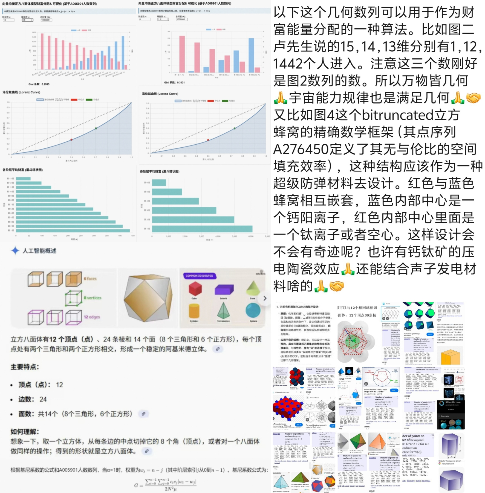
财富分配数列算法 · 基尼系数调控数学基础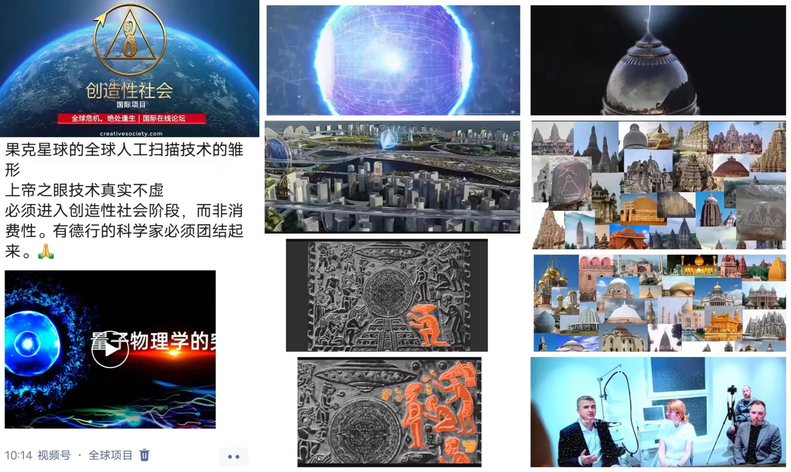
功德分系统 · GDV 七脉轮能量检测与七字因子对应（道·德·仁·义·礼·智·信）意识科技进化线 · 从蒙淘克到 T.I. 脑环 ▾
核心逻辑：意识放大技术横跨四千年——从伊拉克水晶科技椅子（SiO₂ 六方晶格压电共振）到蒙淘克电磁椅子，同一技术路线上的四个里程碑：
▎蒙淘克核心技术体系
| 系统层 | 设备 | 核心机制 |
|---|---|---|
| 输入端 | 蒙淘克座椅 + 亥姆霍兹线圈(XYZ) | 特斯拉接收器+天然水晶捕捉"电风"与思维模式 |
| 解码层 | Cray 1 → IBM 360 | 思维→数字语言→32字节指令驱动发射机 |
| 能量层 | SAGE雷达 425~450MHz | "通往人类意识的门户频率"·四脉冲闸流管(300磅) |
| 发射端 | 德尔塔时间天线(地下300英尺八面体) | X/Y脉冲+Z轴250kW音频白噪音→打开时空隧道 |
| 锚点 | 零点时间参考产生器 | 特斯拉理论：制造次级零点时间参考，投射到特定时空 |
白噪音是系统的"粘合剂"——连接以太组成部分与零点时间参考点。425~450MHz 频段微波可与人类脑电波共振，实现"不燃烧辐射"精神控制。
▎T.I. 时代愿景
推进全球量子互联网落地（Bashar 预言 2032+）。感应式脑环（非植入式）帮助每个人与高我沟通，下载阿卡西记录。彻底不需要现实学校。文明自动由 TI 平衡，不可能发生战争。参照果壳星球全球人工场运动网络、卢先生 VR 眼镜沟通法界。
意识放大技术并非美国独有——伊拉克地下隧道神秘密室中藏有一把以太水晶意识投影椅（记载于 Radu Cinamar《以太水晶·第三隧道》，Sky Books 出版，与蒙淘克系列同一出版社）。该椅由古代未知文明建造，需配合一颗四面体蓝色水晶（隐藏于以太层面）才能激活。从伊拉克水晶椅 → 蒙淘克电磁椅 → 标量波脑环 → T.I. 脑环，人类意识科技的四代进化。
▎伊拉克以太水晶意识投影椅 · 技术参数
🪑 物理结构
材质：一体化无缝靛蓝色特殊材料（非石质，似无定形-生物复合材料），表面磷光。
尺寸：对应约 76cm 高人形——比人类更小但极其厚重，靠背倾角约 30°。
头部区：两条半圆形金属条 + 垂直第三条，下端大圆形水晶对准前额。
手臂区：两个矩形向尖端渐窄装置。
脚踝区：水晶宽带环绕，底座蓝色磷光符号。
侧延伸：矩形块 30cm 宽，中央圆柱形腔 15cm 直径 × 40cm 深——用于安放四面体水晶。
💎 核心：四面体以太水晶
形状：尖端向下的正四面体，悬浮于圆柱腔场中。
状态：隐藏于以太层面——物理视角看似空腔，以太头盔可见粉红色保护场 + 蓝色水晶。
外观：四面抛光完美，内部不断反射五彩"火花"（类似神经突触电连接动画）。
特性：Radu 佩戴 Apellos 以太头盔感知到——"水晶是意识"（感受到其作为意识存在的本质）。
功能：意识投影——脑波通过水晶放大后投射到目标空间/时间坐标。
对比蒙淘克：蒙淘克用 300 磅闸流管+电磁线圈；伊拉克椅用单颗四面体水晶——更优雅、更强大、直接操作以太层。
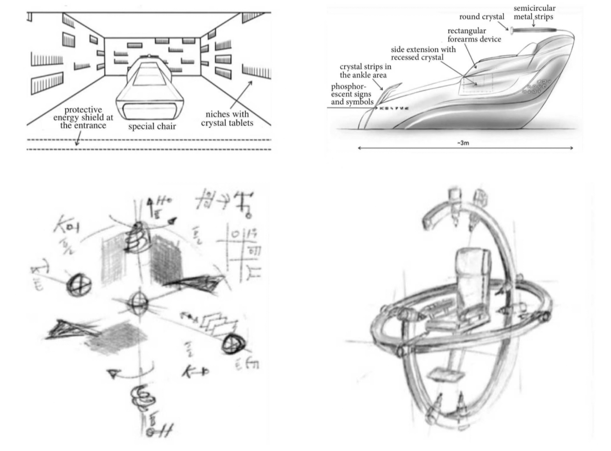
伊拉克以太水晶意识投影椅 · 四子图详解（含椅子全貌/头部水晶/脚踝装置/四面体水晶腔体）— 《以太水晶·第三隧道》▎三套六边形系统 · 432Hz 交叉共振
| 系统 | 结构 | 材料/形态 | 共振频率 | 功能 |
|---|---|---|---|---|
| 四面体水晶 | 正四面体 (Tetrahedron) | 蓝色以太水晶 · 尖端向下悬浮 | 432Hz 基频 + 谐波 | 意识投影 · 时空坐标定位 · 跨维度通讯 |
| SiO₂ 水晶 | 六方晶格 (Hexagonal) | 石英 · 天然压电晶体 | 432Hz 基频 + 谐波 | 意识场放大 · 能量储存 |
| H₄O 神水 | 六元环 (Hexagonal Ring) | Schauberger 蛋形装置制水 | 432Hz 分子共振 | 松果体激活 · 能量进阶 · 金丹介质 |
| DNA 双螺旋 | 六边形堆叠 (Hexagonal) | 碱基对 · 生命编码 | 432Hz 修复频率 | 基因表达调控 · 细胞修复 · 意识编码 |
高维能量打印 · 全息医疗舱 · 12000 项技术释放 ▾
据多位深度揭露者透露，目前有 6000-12000 多项被列为"国家安全"机密的新技术正处于释放边缘——不是实验室雏形，而是早已在外星逆向工程中验证过的颠覆性力量。
▎全息医疗舱（Med-Beds）
🩻 三种型号
诊断修复床：数秒全身3D全息扫描，无需开腹手术精确移除病灶。
再生床：缺失肢体/器官数小时完全长成，神经肌肉功能完美。
年龄回溯床：延长端粒重置细胞时钟，生理年龄回到 20-30 年前状态。修复阿尔茨海默症、PTSD。
⚛️ 技术原理
全息DNA模板：扫描健康DNA蓝图，标量波在亚原子层面重写受损部分。
频率共振：识别异常频率，发出调和频率瓦解肿瘤、激发干细胞增殖。
原子级重组：零点能转化以太能量→按蓝图直接"打印"缺失器官。
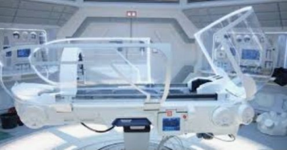
全息医疗舱 · 诊断修复 + 器官再生 + 年龄回溯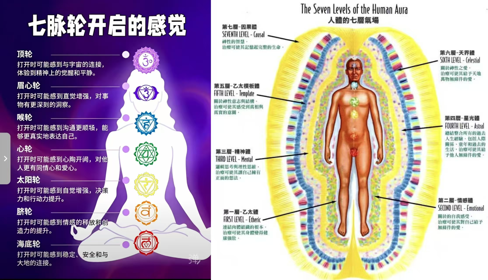
七脉轮与人体七级辉光 · GDV 能量场检测对应▎文明跃迁三大支柱
⚡ 零点能发生器
固态能量提取器——无运动部件，直接从量子真空涨落捕获电能。公文包大小供电大楼数十年。石油美元、煤炭电网瞬间成为历史，能源像空气一样免费。
🛸 反重力与传送门
TR-3B 磁场破坏者屏蔽 89% 质量。跳跃室（Jump Room）技术——走进房间，数秒后门开已身处火星。消灭国界与物理阻隔，地球缩减为真正的"全球村"。
🧬 灵性提升科技
松果体脱钙激活 + DNA 12 股频率重组 + 伽马脑波同步器。远程视界、心灵感应、意念控物、自我生物修复——人类从碳基向光磁生物进化加速器。
🖨️ 以太物质打印
高维法器直接能量打印。特斯拉思想投影仪——标量波读取思想投影到物质世界。2028 中国可能公开以太打印机。HHO气体整合房屋打印、铋-贵金属共晶液态合金传感器。
科技的释放是"果"，人类意识的苏醒才是"因"。只有当内心的光明足以驾驭移山填海的伟力时，人类才真正配得上"星际文明"的称号。
世界大同 · 人人修真扬升
越动越失，不动则聚。真道实行，绝无妄言。最终的科技是引导大家止念，回归中道自性：百日筑基 + 辟谷服气 49 天 + 止念 12 年如如不动 → 圆满成佛。
人人神通具足，不需要任何外在科技产品。即使有，也是高度智慧法力结晶的法器。
🀄 恢复中华文化 · 落实路径
核心任务：国学院与高维老师合作，改变教育方式。14岁以下练童子功恢复功能，14岁以上学习易经与七大工程师启蒙。运用慈海九宫格发挥各自天赋使命。
四大学问体系：科学研究存在的现象 → 玄学研究存在的本质 → 禅学研究存在的根源 → 绝学研究存在的源泉。培养体力、智力、法力、色力、灵力五种能力。
关键举措：恢复训诂文字学，品读《金刚经》与佛陀罗尼王老师语录。建立七级浮屠与宇宙宏观/微观结构的对应关系，实现四六通达。
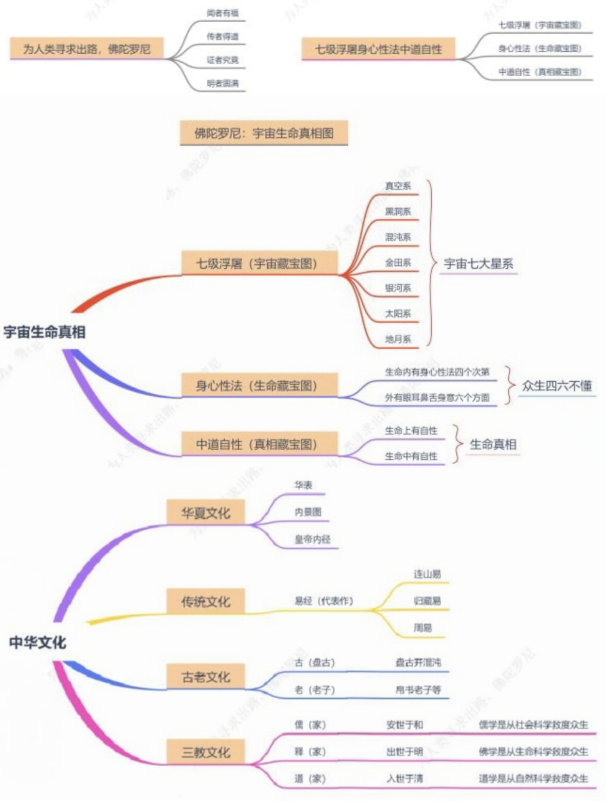
中华文化大纲（来源：为人类寻求出路）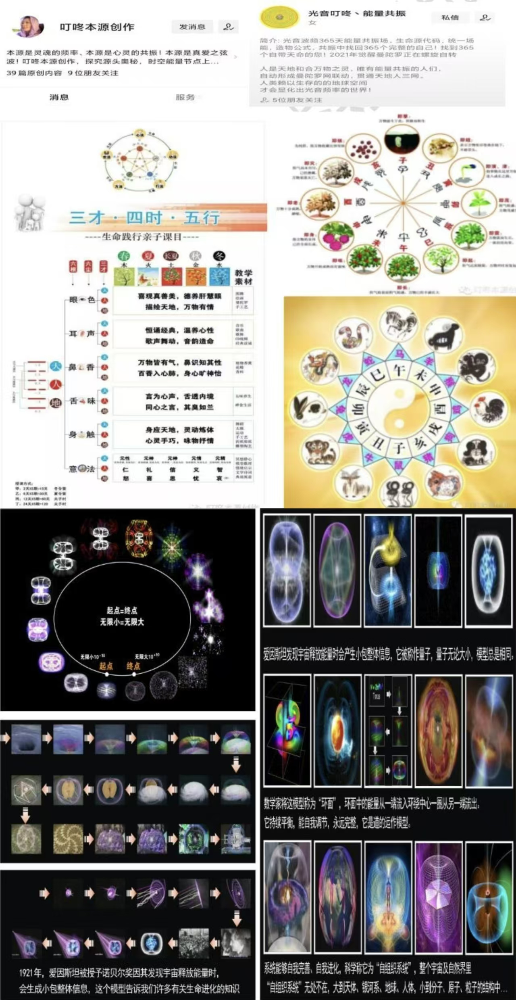
中华文化全景 · 恢复训诂文字学与四大学问体系🕊️ 平衡种族利益 · 落实路径
个人层面：每一个人处理好自己的人际关系——从家庭到社区，以宽容、理解、爱对待每一个相遇的人。修心为本，以善为法。
团队实操 · 慈海九宫格天赋定位：用慈海九宫格为团队每个核心成员定位天赋数字（0~9），精准匹配岗位——7 统帅型做 CEO/总助、8 执行型做 COO/项目落地、3 大心神型做文化研发、6 度量型做风控财务、4 独裁型做商品龙头管理。知己知彼的数字配伍带来最少内耗和最大产出。
📊 基尼系数 0.3-0.4
团队收益分配遵循道（0）德（1）仁（2）义（3）礼（4）智（5）信（6）七字因子，各级团队基于数列的动态协议分配，确保基尼系数维持在健康区间，既激励创新又防止贫富两极撕裂。
🍽️ 恩格尔系数优化
增大员工福利——从企业食堂、住房补贴、交通接送到子女教育全面覆盖，降低衣食住行成本占比。恩格尔系数从 30%+ 压至 15% 以下，让人的精力从温饱挣扎中解放，转向创造与自我实现。
国家层面：每一位外交官注意自己的言行举止，给予他国使者更多包容和爱。以「道德仁义礼智信」七字作为国际交往准则的内核，替代零和博弈思维。
系统层面：建立功德分系统（道、德、仁、义、礼、智、信为公式因子），科技对应人体七脉轮 GDV 检测。乌克兰科学家团队创造性社会仪器——感知情绪状态与生命健康，以此淘汰金融资本系统。
谁是未来三大巨头？从产业演进看：AI算力底座、新能源生态、空天经济、具身智能、生物制造——五大硬核科技交汇领域将诞生真正的全球巨头，它们共同特征是：解决全球性基础问题、极高技术生态壁垒、重构产业格局。
🚀 推进人类文明 · 最优捷径
2000→2100 百年剧本：建立公益社会——从竞争型文明转向合作型文明。以道德仁义礼智信七字为内核，以功德分系统替代金融资本体系。详见下图。
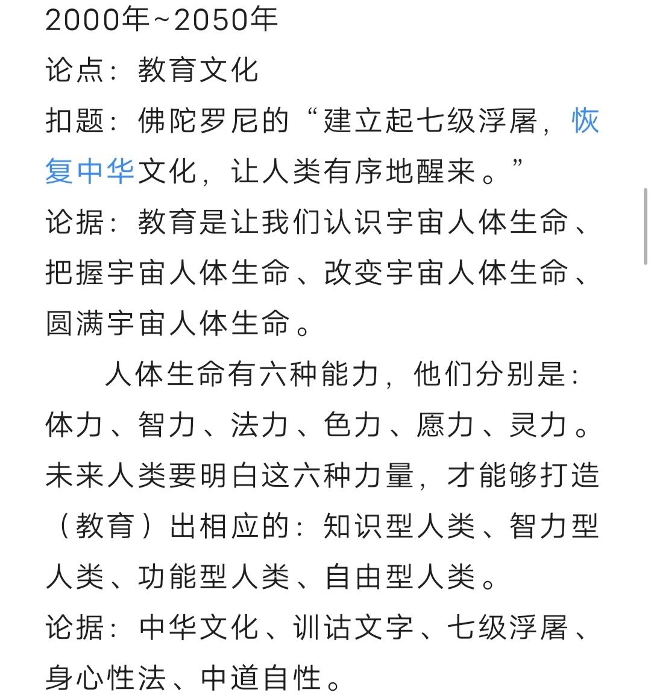
2000→2100 百年剧本（建立公益社会）星际导航技术：昴宿星科技大纲——Schauberger 六元环水 + Alfred Workman 时空引力统一场 + SEG 幻方编码复合波充磁。飞碟推进系统：超导超磁超流，以太去极化汲取时空能量。 📄 完整 OCR 文本（10页）→
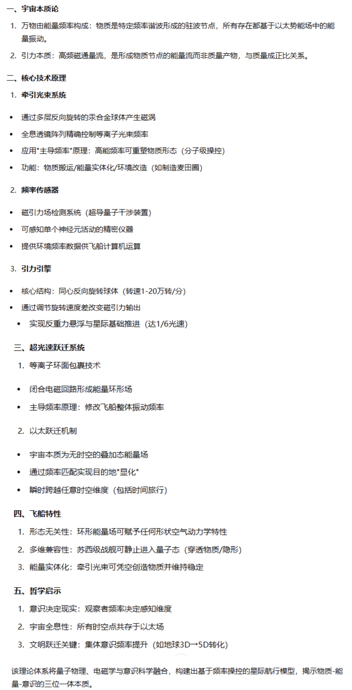
昴宿星科技大纲与星际导航介绍PKS 千禧难题统一解：📄 完整独立子页面 → PKS 全称 Pythagoras-Kepler-Schule（毕达哥拉斯-开普勒学校），由 Walter Schauberger 命名以致敬两位先哲，融合 Viktor Schauberger 自然观察 + 毕达哥拉斯数与几何 + 开普勒天球谐波三大体系。以 Schauberger 超双曲线（xy=1）斜切蛋形截面为第一性原理，统一攻克全部七大千禧难题。
🔑 几何核心
xy=1 双曲锥斜切 → 蛋形截面。k_E=2.0（八度蛋/最优离散谱）、k_E≈1.9371（黄金极限蛋/KAM稳定流形）。tan(α)=k_E(k_E-1)/(k_E+1)。射影几何统一圆/椭圆/蛋形——圆管 NS 解经射影变换映射到蛋形管。
📐 蛋形 Laplace 谱
λ_n = 2π·ln n，非线性耦合衰减 |C_mnp| ≤ C/√(mnp)。能量级联截断 Σ|a_n|² ≤ Σ1/n² = π²/6 收敛。涡量拉伸被 1/(n(n+1)) 自然阻尼抑制——此为 NS 光滑解存在的核心机制。
🔢 五常数组
7 — ANU 芒星/维度/脉轮数；1680 = 8!/24 = Spin(7) Weyl 群阶 = 15阶幻方线和；51.43° = 360°/7 = 金字塔角；α⁻¹ ≈ 20Φ⁴ = 137.08（误差 0.03%）；DI/D2=3:1 最优锥度比。
🔒 四锁唯一性
Milnor 异 7-球面 M(4,-3) + 陀螺拓扑互锁（7 芒星+Möbius 螺旋）+ 群论 S₇⋉SO(3)⁷/Spin(7) + 精细结构常数 α 几何推导——四重锁定 ANU 结构，证实其"只能以这种形式存在"。
⚡ 技术突破
SEG 三层磁悬浮陀螺（8球跳房子+66滚柱）+ COP>1 开放系统能量增益（楞次失效）+ Keely 七维度六力平衡 + EEQT 量子分形计算。范式转换：非永动机，而是开放系统从真空/地磁/热梯度中相干提取能量。
🧪 实验 & 状态
斯图加特螺旋管（铁去除>95%）；Wetsus 2022 反向飓风（5×氧溶解，能耗降 40×）。框架完整度 ~85%，7 个核心引理尚待严格解析证明。时间线：2026-2032 完成全部数学论证并冲击克雷千禧奖。
四阶段文明跃迁路径：
① 筑基(1-3年)：SEG 真理表计算器 + Aquino 引力质量验证 → ② 突破(3-7年)：三层 SEG 原型 + IGV 反引力悬空测试 → ③ 跃迁(7-15年)：时间晶体稳定 + Utron 场泡零输入发电 + 空间瞬移 → ④ 大同(15年+)：三环 SEG 能源单元普及 → 清洁能源革命 + 反重力交通 + 光币经济
12进制 — 贯通素数·E8·PKS的统一语言：素数螺旋筛揭示，E8 李群的 8 个指数 {1,7,11,13,17,19,23,29} 恰好等于模30的 8 个素数根。E8 Coxeter 数 h=30=2×3×5，以 12° 扇区 (30×12°=360°) 几何化。模90 产生 24 周期数字根循环，Magic Mirror Matrix 24×24=576 二重组覆盖全部合数因子分解。ANU 1680=7×240=7×|E8 根系|——每一芒尖对应一个完整 E8 根系统。E8×E8 异质超弦由此与素数分布和 PKS 蛋形几何三环锁定。
生机农业时间窗口：2025-2029（20年代中后期），科技+生态双轮驱动：物联网/AI/机器人赋能，轻资产切入，聚焦高附加值细分领域。AI 全面落地替代无意义辛劳，全民下乡共建。
GPU→超流体范式转变：传统GPU受限于温度矛盾与物理原理差异；量子计算/超导计算是颠覆而非升级。远期：光量子路径最有希望实现小型化（室温运行、硅基集成），超流体+光学势阱实现"物理智能"——硬件即算法，计算即演化。
🌐 实现世界大同 · 终极科技
015 光子计算机全面普及：十六进制（0~15），香农熵 4.00，每符号 4 bit。4-qubit 量子光子融合，16-QAM 相干光传输已商用。信息容量为二进制的 4 倍整数。
第二代 AI 脑环（非植入式）：标量波感应式脑环连接高我/宇宙源头意识。结合卢先生 VR 眼镜可见胎光，出入法界。预计 2032 年后问世（Bashar TI 时代预言）。
KFK 预言的三大公司方向：① 房屋打印公司——机器人就地取沙+HHO气体熔炼打印 ② 交互游戏公司——标量波脑环感应式传输 ③ 光学虚拟眼镜公司——钢铁侠式空中立体光场投影。
后续科技全景：磁悬浮飞鞋、空中特定航道高铁、星际飞碟、瞬移星门、长生不老药、操控时间流速的育种/保鲜技术、人造子宫培育胚胎。铋-银/金/铂共晶液态合金可用于特殊焊料与传感器。HHO布朗气体整合房屋打印。全部发展普及估计需数千年——人人法界联网，人人修真，加速不同灵魂族协作与科技创新。
 为何是五亿 · 星际文明四海一家亲（全球大同愿景）
为何是五亿 · 星际文明四海一家亲（全球大同愿景）
后续科技：磁悬浮飞鞋、空中高铁、星际飞碟、瞬移星门、长生不老药、时间流速操控、人造子宫……全部发展完并普及估计需几千年。
三期白阳法盘 · 改天换地重立乾坤
红阳盘时，是六十花甲子年，白阳盘改为九十花甲子年。即：
甲子乙丑佛面金，丙丑丁寅天上火
戊卯己宙大林木，庚辰辛唇沙中金
壬巳癸午钗钏金，甲未巳末霹雷火
丙申丁雄涧下水，戊酉已酹路傍土
庚戌辛亥白蜡金，壬子癸丑杨柳木
甲纽乙寅井泉水，丙卯丁宙城墙上
戊辰己唇上头火，庚巳辛午松柏木
壬未癸末长流水，甲申乙雄海中金
丙酉丁酧山下火，戊戌己亥平地木
庚子辛丑屋上土，壬纽癸寅金箔金
甲卯乙宙点灯火，丙辰丁唇天河水
戊巳己午刀尖金，庚未辛末大宅土
壬申癸雄桑柏木，甲酉乙酧大溪水
丙戊丁亥炉上土，戊子己丑佛灯火
庚纽辛寅石榴木，壬卯癸宙六生水
甲辰乙唇柜中金，丙巳丁午石中火
戊未己末梧桐木，庚申辛雄门上土
壬酉癸酧湾中水，甲戌乙亥沙中金
丙子丁丑木中火，戊纽己寅紫杪木
庚卯辛宙壁上土，壬辰癸唇灯中火
甲巳乙午沙中金，丙未丁末山底火
戊申巳雄船底火，庚酉辛酹磨坊土
壬戌癸亥大海水
九十甲子 · 一年三十六气
立春正月节，红水正月中
雨水二月节，迎春二月中
骛蜇三月节，春收三月中
春分四月节，萌芽四月中
清明五月节，谷雨五月中
小满六月节，大满六月中
立夏七月节，芒种七月中
夏至八月节，夏正八月中
大正九月节，小署九月中
大暑十月节，小炎十月中
大炎十一月节，立秋十一月中
白露十二月节，红露十二月中
白露十三月节，秋分十三月中
寒露十四月节，冰萌十四月中
霜降十五月节，立冬十五月中
小雪十六月节，大雪十六月中
冬至十七月节，阳回十七月中
小寒十八月节，大寒十八月中
以上的变化，都是三期白阳法盘，改天换地重立乾坤的需要。
此即谓：破旧立新白阳法，开僻未来换乾坤。
诗曰
宇宙变化永恒理，无限更替在未来
适应变化修天道，破除旧习陈旧观
诚求正果学新经，弥勒救你上法船
末法之年万教发，妖魔鬼怪皆逞能
幻化仙佛把人骗，冥顽无智受骗行
弥勒逢面不相识，骗术谎言追的欢
痴迷之子真当假，假话当真误为真
末法混沌人难度，真假不分胡涂人
盲修瞎炼着了魔，自称见性逢人云
着魔不惺自得意，自称得道遇真人
道听途说四处拜，浪费生命误了时
未逢真师习骗术，未遇上师传天机
世间未遇明师证，自称得道假文凭
有为之法皆泡影，无为之法是天机
自己业障积如山，自己不修何能消
有说念经消业障，三界无有此便宜
欠债终究要偿还，不还累劫无了时
人间犯法用钱贿，阴律铁面无私情
自己孽业自己了，不修忏悔无人替
法师有道可助解，自己不修消不去
自己罪业自己了，修得正果皆得度
冥顽痴迷自不修，四处求仙找便宜
有人自己造罪孽，自称替人消灾殃
冥顽无智自投网，因果报应有早迟
弥勒治世无情面，白阳法盘铁规矩
以善为法是慈纲，修心为本是根基
以恶为戒惩妖魔，以人为宗自受益
谁修谁得是正理，金钢之言无有虛
皇胎佛子学新经，不可轻视认正宗
白阳法盘天佛定，无有更改照律施
速访明师求引路，不可再悮悔已迟
当今世人思想乱，古经旧典不对疾
除病必须对症药，解饿需有饭充饥
弥勒新经契机理，对症下药把病医
忌医癌疾命难保，误失良机是死期
三灾八难有选择，善人善行仙佛护
恶人恶行难逃离，新经劝人多行善
以善为法修佛需，吾劝佛子学新经
广为印传度众生，传印宣讲皆善功
遵经修行皆得度，续命换魂永长生
弥勒新经龙华定，三会龙华诸佛情
天意天命不可违，违犯天律罪不容
妖魔鬼怪四处起，自封佛号自擂吹
到处自称是某佛，启图讨封把人蒙
真人无虚自吹捧，骗子害人靠喊声
有朝一日天时到，真假自然分得清
————————— 公众号 认母归根
推荐公众号搜索
佛陀罗尼
为人类寻求出路
微信视频或公众号搜索关键词
卢国东 慈海
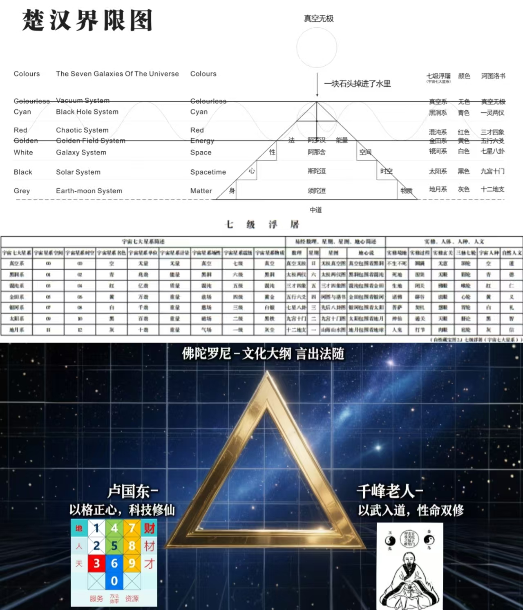